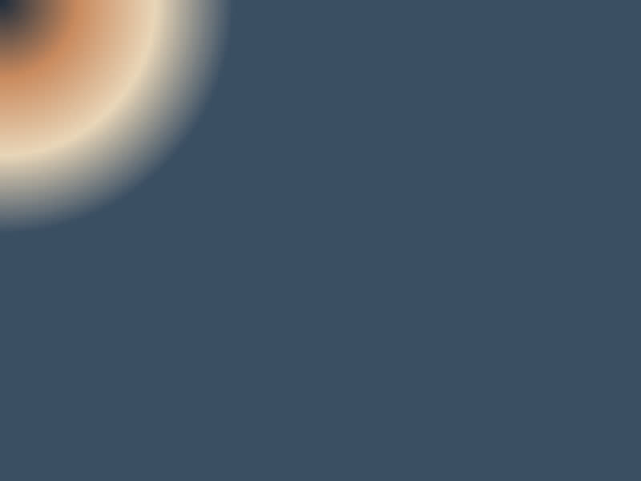
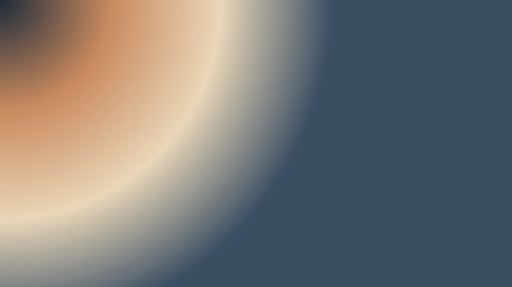

Как проходит монтаж
Замерщик приезжает в удобное время, считает стоимость при вас и фиксирует её в договоре. Монтаж занимает один день, мусор увозим сами.

Замер бесплатно
Оставьте телефон — перезвоним в течение 15 минут в рабочее время.

Замер бесплатно, монтаж за один день. Цена после монтажа не меняется.
Вызвать замерщикаЗамерщик приезжает в удобное время, считает стоимость при вас и фиксирует её в договоре. Монтаж занимает один день, мусор увозим сами.

Оставьте телефон — перезвоним в течение 15 минут в рабочее время.